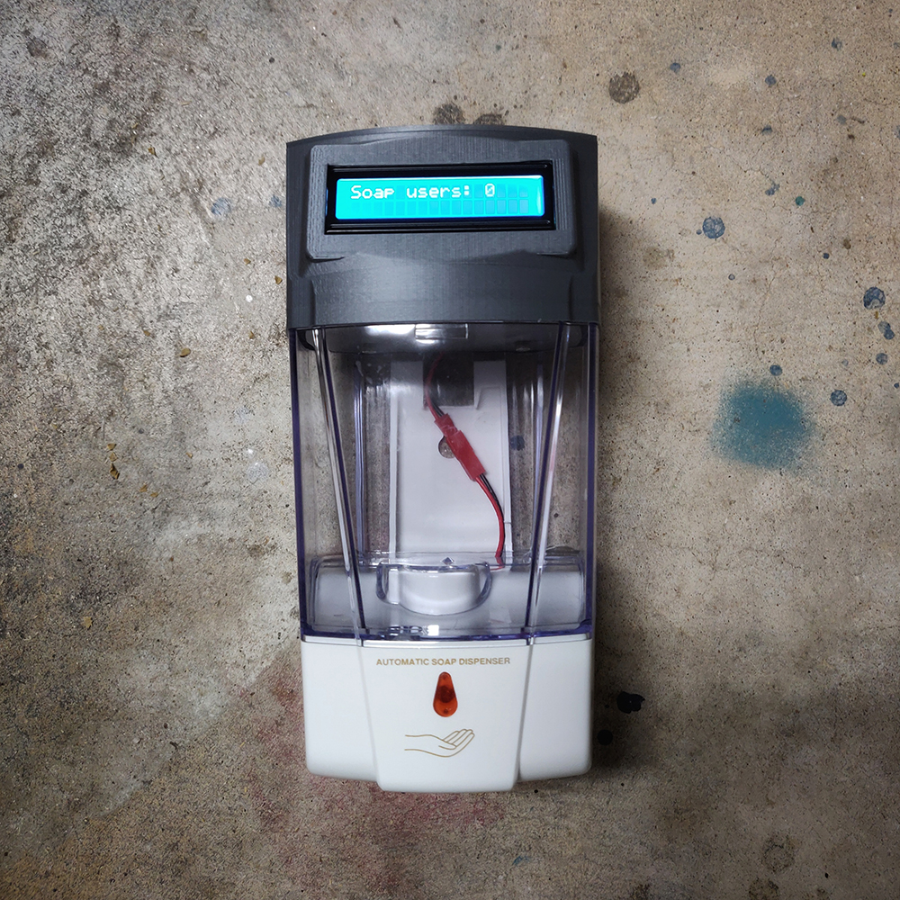

The Counting Soap Dispenser

Wait What?
This project is the result of a persuasive design project I was assigned in an interaction design class. The goal was to design something that would help influence people's decisions for the better. As I am sure many of us are aware, the problem of people washing their hands in the bathroom is one that has gone on for far too long. That is where the counting and clapping soap dispenser comes in! Not only will it count how many people use soap, but it will also clap for anyone who chooses to use it.


How It Was Made
The process began with making sure this was feasible. I made a simple prototype on some breadboards which worked without a hitch and it was off to choosing the right soap dispenser! I was looking for one that looked good and would be fairly easy to modify. Once I had chosen a soap dispenser and had it in my hands I scanned the lid on a photoscanner and the modeling began.